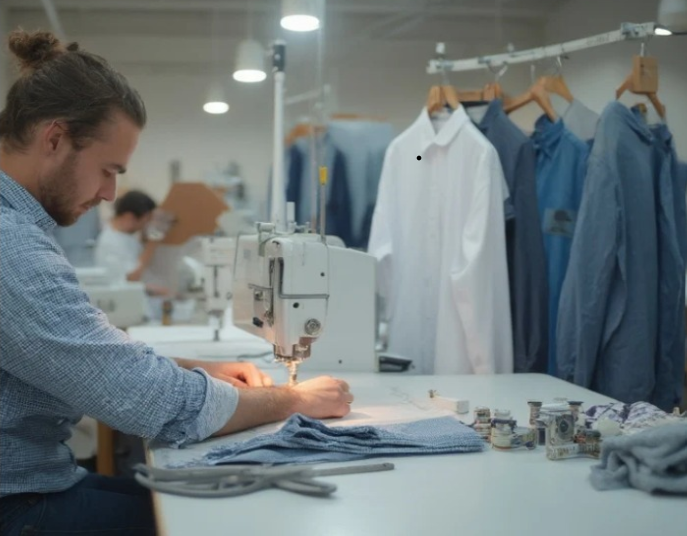

Misión
Nuestra misión es promover la cultura guatemalteca a través de productos textiles que no solo visten, sino que cuentan historias. Buscamos brindar a nuestros clientes una forma única de expresar sus raíces, su orgullo y su estilo, al mismo tiempo que contribuimos al desarrollo económico y social de las comunidades artesanales. Creemos firmemente que la moda puede ser un puente entre tradición e innovación, y una herramienta para generar impacto positivo.
Más que una marca, somos un compromiso con la cultura, la calidad y las personas que hacen posible cada diseño.
